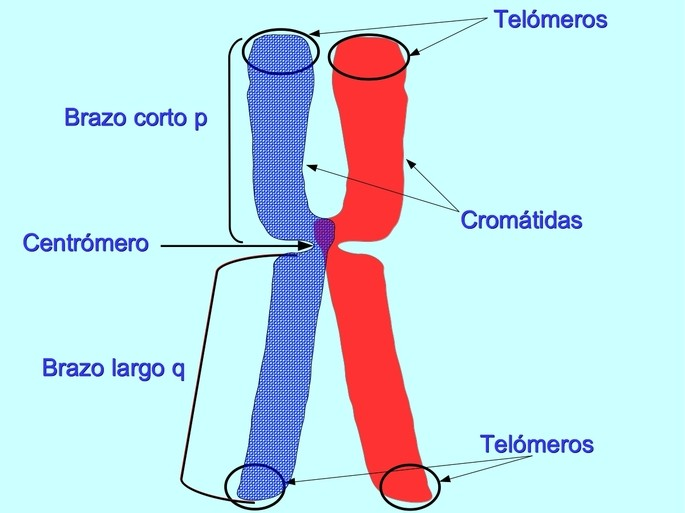

¿Qué es un Cromosoma?
Un cromosoma es una estructura altamente organizada, formada por ADN y proteínas, que contiene la mayor parte de la información genética de un ser vivo. Los humanos tenemos 23 pares de cromosomas.

Estructura de un cromosoma: brazos (p y q), centrómero y telómeros.